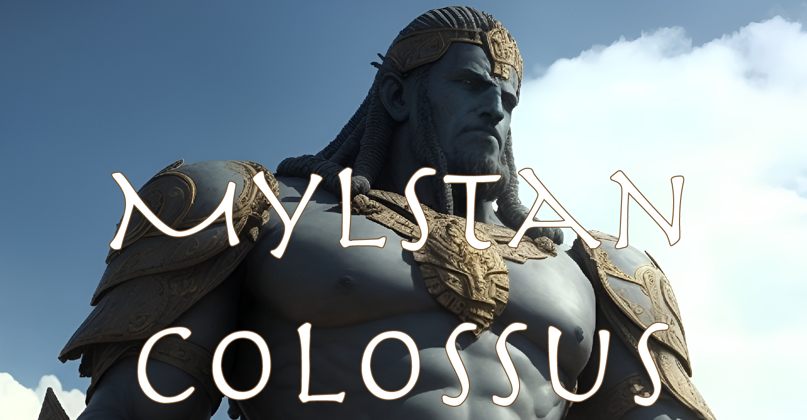

Mylstan Colossus
Rugatha Legends

Rugatha Legends
3152.6.23
睜開雙眼，冒險者們感到困惑。除了他們之外，身邊倒了一個人。那人似乎是帶他們來到這裡的嚮導，名叫 Parrell Hendrix，但是他死透了。
除此之外，眼前的巨像似乎正在攻擊他們。冒險者們努力與他對抗，卻發現在怎麼用武器攻擊，或是甚至透過魔法，都對他沒什麼影響。那巨像堅不可破，甚至可說是所向無敵。
對戰的同時，冒險者們逐漸想起自己為何會出現在這無助的場景。幾天前，著尼森帝國遭到一群平民推翻，掀起了暴動。皇帝雖然沒死，但已失去了對帝國的控制權。而在反抗的群眾中，由崔尼斯教組成的「崔尼斯的聖騎士」是最大的勢力。
冒險者們受聘於卓尼森帝國的皇帝喬森十三世，奉命找到崔尼斯教的神秘武器，邁爾斯坦巨像，並將其摧毀。傳說中，邁爾斯坦是崔尼斯的弟弟，但在崔尼斯成神後，邁爾斯坦拒絕他的邀約，決定留在凡間，保護崔尼斯的信徒，因此十分受崔尼斯信徒們的愛戴。邁爾斯坦也受到崔尼斯的祝福，以人類之姿活了近兩百歲才死去。在他死後，信徒們建起了一座雕像來紀念他，稱為「邁爾斯坦巨像」。不過隨著時間久遠，邁爾斯坦逐漸被遺忘，巨像的存在也成為了傳說。
隨著與巨像的戰鬥持續著，冒險者們發現自己在所處的平面，似乎是個浮在空中的圓盤，且隨著時間，圓盤邊緣的石塊逐漸剝落，一不小心就會掉下去。而下方，距離大家所熟知的地面極為遙遠。
WotCy 掉到了圓盤的邊緣，永恆的墜落下去；Raphael 被巨像擠壓，斷光了骨頭；Harald 沒能逃過巨像的一拳。最終只剩下苟延殘喘，爬在巨像身上的 Mana Jane 和化身為鳥的 Obba，逃過一劫。在圓盤周圍全數崩塌後，巨像蜷起身體，不動了。Mana Jane 和 Obba 兩人停在巨像頂端，稍作休息。但是他們不知道巨像何時會再動起來，也不知道要怎麼活著回到地面……
3152.6.22
Mana Jane 和 Obba 從夢中驚醒，發現自己睡在帳篷中。周圍的 WotCy、Raphael 和 Harald 還沒醒來。帳篷被拉開，活生生的 Parrell 催促著他們，說距離石像只剩一天的路程了，要大家趕快出發。Mana Jane 和 Obba 清楚記得「剛剛」發生的事。叫醒其他夥伴後，大家也對與巨像的戰鬥感到歷歷在目。大家將完全搞不清楚狀況的 Parrell 打暈了後，Obba、Raphael 和 Harald 決定要帶著 Parrell 回到巨像那裡，探索清楚到底發生什麼事；Mana Jane 和 WotCy 則決定放棄任務，回去找皇帝索取獎金。
被打到受傷的 Parrell 走路速度慢了不少，原本一天就會抵達的路程，他們沒能趕上，中間只好停下來過夜。
冒險者們依據記憶中圓盤的範圍估算，在肉眼可見到巨像時，開始擬定戰略。Raphael 先前往巨像旁，簡單探索是否有什麼魔法或機關，隨後 Obba 和 Harald 也趕上。接著，Raphael 透過魔法，要求 Parrell 攻擊巨像，同時三名冒險者躲到附近的樹林觀察。
圓盤隨著轟隆聲響起而逐漸升起，正如 Obba 化為鳥時所見，那並不是個圓盤，而是個圓柱。
3152.6.23
一天過去，圓柱已上升到冒險者們看不見他的頂部了。他們計算著這時離開是否安全，然後就聽見「啪」的一聲，一團模糊不清的肉塊從天而降，墜落在圓柱的周圍。那想必是 Parrell 的屍體了。
3152.6.23
WotCy 和 Mana Jane 依照記憶，回到了帝國首都桑普塔諾市，但衛兵的穿著似乎變得不太一樣了。詢問了路人後，才知道卓尼森帝國已不復存在，現在是崔尼斯帝國掌權了。Mana Jane 清楚狀況後，便決定離開這裡，回家去了。沒領到賞金的 WotCy 很不甘心，透過各種方法，混進了戒備森嚴的王宮內，偽裝成被新聘來上工的平民，並四處尋找金庫的蹤跡。他成功見到了新任的皇帝霍里森一世，告訴他有人要襲擊對他們來說應該很重要的邁爾斯坦巨像。皇帝對於他知道邁爾斯坦巨像這件事感到詫異，但也沒有因此太過慌張，僅派了人去調查而已，WotCy 終究沒有得到他想要的獎賞。
Raphael、Obba 和 Harald 回到了桑普塔諾市，在了解到卓尼森帝國已經瓦解了後，他們很清楚自己的賞金是沒能拿到了（當然，他們也沒能完成任務就是了），於是他們便離開了。
3152.6.24
多待了一天，WotCy 清楚知道自己在這裡什麼也拿不到，於是他利用機會，將手上的掃把扔了，走出了王宮。首都的居民們各有忙碌的事，WotCy 走在路上，沒有什麼人特別關注他，直到他發現自己的肩膀被拍了一下。他回頭，一名披著斗篷，看不見臉的人用手比了個「噓」的手勢。WotCy 急忙想問清楚那人是誰？這代表什麼意思？但他只得到了一個模糊的答案：「卓尼森會再回來的。」然後他就昏過去了。
清醒後，他回想起，在昏倒之前，他似乎看見了那斗篷底下一抹微笑，以及聽見一個姓氏：Berners。